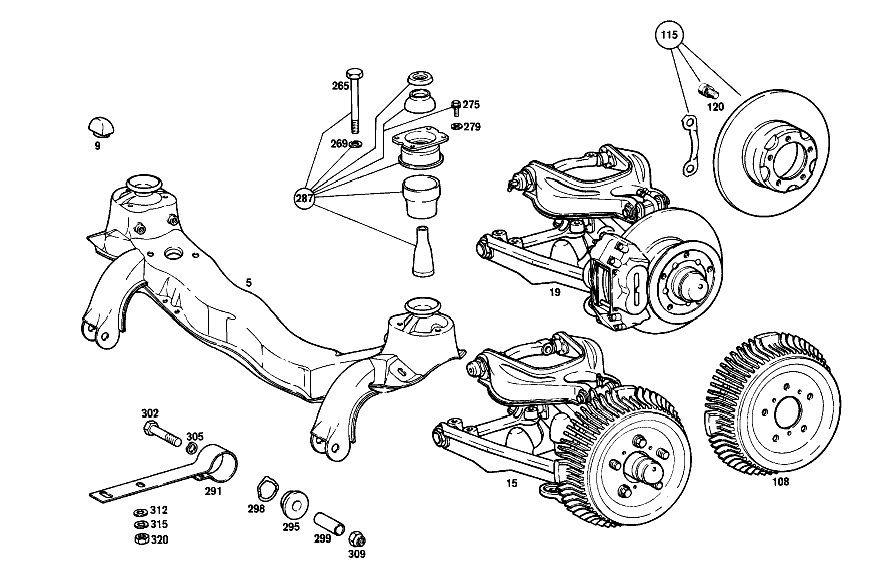

| № | Артикул | Название | Кол. | Примечание |
|---|---|---|---|---|
| 5 | A 111 330 30 42 | ПОДРАМНИК ПЕР. МОСТА | 1 | |
| 9 | A 112 333 01 65 | Резиновый буфер | 4 | |
| 19 | A 110 330 14 98 | ПЕРЕДНИЙ МОСТ | - | СЛЕВА |
| 21 | A 111 330 22 20 | ПОВОРОТНЫЙ КУЛАК | 1 | СЛЕВА |
| 26 | A 111 330 38 20 | ПОВОРОТНЫЙ КУЛАК | 1 | СЛЕВА |
| 28 | N 000007 002208 | - Цилиндрический штифт | 2 | |
| 31 | N 071412 008101 | ПРЕСС-МАСЛЁНКА | - | |
| 31 | N 071412 008102 | Пресс-масленка | 2 | |
| 35 | A 094 990 95 08 | Пресс-масленка | 2 | |
| 41 | A 136 332 08 52 | Компенсационная шайба | NB | 1.7 MM |
| 47 | N 071412 008101 | ПРЕСС-МАСЛЁНКА | - | |
| 47 | N 071412 008102 | Пресс-масленка | 2 | |
| 51 | A 181 994 00 15 | Стопорная шайба | 2 | |
| 54 | N 000934 014019 | Гайка | - | |
| 54 | N 308673 014001 | Шестигранная гайка | 2 | M14X1.5 |
| 58 | A 111 586 00 33 | ремкомплект | 2 | ПАЛЕЦ ПОВОР.КУЛАКА |
| 61 | A 110 330 03 25 | СТУПИЦА ПЕРЕДНЕГО КОЛЕСА | 2 | |
| 65 | A 120 401 01 71 | - Шпилька крепления колеса | 10 | |
| 71 | A 112 334 05 01 | Ступица переднего колеса | 2 | |
| 75 | A 111 334 00 64 | ТАРЕЛКА | 2 | |
| 79 | A 003 997 93 46 | Уплотнительное кольцо | 2 | |
| 86 | A 120 334 07 72 | Зажимная гайка | 2 | |
| 91 | A 108 334 00 25 | Колпак ступицы колеса | 2 | |
| 96 | A 201 547 00 85 | Контактная пружина | 2 | |
| 102 | N 001474 004001 | ПРОСЕЧНОЙ ШТИФТ | 2 | ON SPECIAL REQUEST, INSTALLATION OF RADIO SET |
| 108 | A 180 421 08 01 | ТОРМОЗНОЙ БАРАБАН | 2 | |
| 115 | A 110 421 01 12 | ТОРМОЗНОЙ ДИСК | 2 | ОБЪЁМ ПОСТАВКИ |
| 120 | A 000 990 72 12 | Винт с цил.гол./6-гр. | 10 | |
| 124 | A 111 330 00 51 | РЕМКОМПЛЕКТ | - | |
| 124 | A 107 330 00 51 | Ремк-т роликоподшипника | 2 | |
| 126 | A 111 330 29 07 | Поперечный рычаг | 1 | ВНИЗУ СЛЕВА |
| 131 | A 120 333 01 80 | Уплотнительное кольцо | 4 | |
| 138 | N 071412 008101 | ПРЕСС-МАСЛЁНКА | - | |
| 138 | N 071412 008102 | Пресс-масленка | 4 | |
| 142 | A 120 333 04 74 | Палец | 2 | |
| 146 | A 181 333 01 80 | Уплотнительное кольцо | 4 | |
| 150 | A 181 990 00 55 | гайка | 2 | |
| 156 | A 110 330 01 18 | Ремк-т опорного пальца | 2 | |
| 158 | A 110 330 03 18 | Ремк-т поперечного рычага | 2 | |
| 162 | A 112 330 31 07 | Поперечный рычаг | 2 | |
| 166 | A 108 990 08 01 | болт | 4 | |
| 171 | A 110 994 00 10 | Стопорная шайба | 4 | |
| 175 | N 000433 013005 | Шайба | - | |
| 175 | N 000433 013010 | Шайба | 4 | |
| 179 | A 120 333 01 80 | Уплотнительное кольцо | 4 | |
| 182 | A 094 990 95 08 | Пресс-масленка | 4 | |
| 186 | A 120 333 05 48 | Резьбовая втулка | 2 | |
| 190 | A 120 333 03 74 | Палец | 2 | |
| 195 | A 181 333 01 80 | Уплотнительное кольцо | 4 | |
| 198 | A 120 990 13 40 | Диск | 2 | |
| 201 | A 120 990 32 40 | Диск | 2 | |
| 205 | N 000127 010200 | Пружинное кольцо | 2 | |
| 209 | N 000934 010014 | Гайка | - | |
| 209 | N 304032 010003 | Шестигранная гайка | 2 | M10 |
| 211 | A 120 333 00 73 | Стопорная шайба | 2 | |
| 217 | N 000933 010101 | Винт | 2 | |
| 221 | A 094 990 68 10 | Пружинное кольцо | 2 | |
| 228 | A 110 330 00 18 | Ремк-т опорного пальца | 2 | БОЛТ КРЫШКИ ПОРДШИПНИКА |
| 231 | A 110 330 02 18 | Ремк-т поперечного рычага | 2 | ПОПЕРЕЧ.РЫЧАГ СВЕРХУ |
| 235 | A 115 330 07 03 | ТЯГА СХОЖДЕНИЯ | - | |
| 235 | A 107 330 01 03 | Поперечная рулевая тяга | 2 | |
| 238 | A 000 338 15 15 | - ТЯГА СХОЖДЕНИЯ | - | |
| 238 | A 115 330 07 03 | - ТЯГА СХОЖДЕНИЯ | - | |
| 245 | A 000 995 18 44 | - ХОМУТ | - | |
| 245 | A 000 338 42 45 | - хомут | 4 | |
| 247 | A 000 338 19 10 | - ШАРНИР ШАРОВОЙ | - | |
| 247 | A 000 338 52 10 | - ШАРНИР ШАРОВОЙ | 2 | ПРАВАЯ РЕЗЬБА |
| 247 | A 000 338 55 10 | - ШАРНИР ШАРОВОЙ | 2 | ПРАВАЯ РЕЗЬБА |
| 251 | A 000 338 20 10 | - ШАРНИР ШАРОВОЙ | - | |
| 251 | A 000 338 50 10 | - ШАРНИР ШАРОВОЙ | 2 | ЛЕВАЯ РЕЗЬБА |
| 251 | A 000 338 53 10 | - Шаровой шарнир | 2 | ЛЕВАЯ РЕЗЬБА |
| 254 | A 120 990 01 55 | гайка | 4 | TO 115 330 07 03,08 03 |
| 260 | A 000 330 04 85 | Ремк-т шарового шарнира | 4 | TIE ROD BOOT |
| 265 | N 000960 012333 | Винт | 2 | |
| 269 | N 000127 012200 | Пружинное кольцо | 2 | |
| 275 | N 000933 008145 | Винт | 8 | M8 X 18 |
| 279 | A 108 990 03 40 | Диск | 8 | |
| 285 | A 111 333 02 65 | Резиновый буфер | 4 | |
| 287 | A 110 330 00 75 | РЕМКОМПЛЕКТ | 1 | КРОНШТ. ПЕРЕДН. МОСТА |
| 291 | A 111 331 11 12 | ПЛАСТИНЧАТАЯ ПРУЖИНА | 2 | |
| 295 | A 110 322 15 85 | Резиновая опора | 4 | |
| 298 | A 110 322 02 76 | Проставочное кольцо | 4 | |
| 299 | A 111 322 00 53 | РАСПОРН. ТРУБКА | - | |
| 299 | A 111 332 00 53 | Проставочная трубка | - | |
| 299 | A 111 332 00 53 | Проставочная трубка | 2 | |
| 302 | N 000960 016105 | Винт | 2 | M16 X 1.5 X 80 \-8.8 |
| 305 | N 000137 016202 | Пружинная шайба | 2 | |
| 309 | N 000934 016001 | ГАЙКА | 2 | |
| 312 | N 000125 015004 | ШАЙБА | 2 | |
| 315 | N 912004 014100 | Пружинное кольцо | 4 | |
| 320 | N 000934 014019 | Гайка | - | |
| 320 | N 308673 014001 | Шестигранная гайка | 4 | M14X1.5 |
| A 110 330 15 98 | ПЕРЕДНИЙ МОСТ | - | СПРАВА | |
| A 111 330 30 98 | ПЕРЕДНИЙ МОСТ | - | ||
| A 111 330 31 98 | ПЕРЕДНИЙ МОСТ | - | ||
| A 111 330 24 28 | ШАРНИР КАРДАННЫЙ | - | ||
| A 111 330 25 98 | ПЕРЕДНИЙ МОСТ | - | ||
| A 111 330 31 98 | ПЕРЕДНИЙ МОСТ | - | ||
| A 111 330 23 20 | ПОВОРОТНЫЙ КУЛАК | 1 | СПРАВА | |
| A 111 330 39 20 | ПОВОРОТНЫЙ КУЛАК | 1 | СПРАВА | |
| A 180 332 01 48 | - втулка | 2 | СВЕРХУ | |
| A 111 332 01 48 | - втулка | 2 | ВНИЗУ | |
| A 000 997 14 88 | ПРЕСС-МАСЛЁНКА | 1 | ||
| A 120 332 02 60 | Пылезащитная крышка | - | ||
| A 120 332 00 51 | ДИСТАНЦИОННОЕ КОЛЬЦО | - | ||
| A 111 332 01 06 | Шкворень пов. кулака | - | ||
| A 120 332 01 62 | Прижимная шайба | - | ВНИЗУ | |
| A 120 332 02 62 | Прижимная шайба | - | СВЕРХУ | |
| A 136 332 09 52 | Компенсационная шайба | NB | 1.9 MM | |
| A 136 332 10 52 | Компенсационная шайба | NB | 2.1 MM | |
| A 136 332 00 52 | Компенсационная шайба | NB | 2.3 MM | |
| A 136 332 01 52 | Компенсационная шайба | NB | 2.5 MM | |
| A 136 332 02 52 | Компенсационная шайба | NB | 2.7 MM | |
| A 180 333 00 09 | Кронштейн пов. кулака | 2 | ||
| A 111 330 05 25 | СТУПИЦА ПЕРЕДНЕГО КОЛЕСА | 2 | ||
| A 112 401 01 71 | - ШПИЛЬКА КРЕПЛЕНИЯ КОЛЕСА | 10 | ||
| A 000 981 58 05 | Конический подшипник | 2 | ||
| A 000 981 59 05 | Кон. роликоподшипник | 2 | ||
| A 115 334 03 15 | Диск | 2 | ||
| A 115 994 07 32 | Стопорная шайба | 2 | ||
| A 115 994 07 32 | Стопорная шайба | 2 | ||
| A 120 990 13 20 | болт | 2 | ||
| A 120 330 01 57 | КОЛПАК КОЛЕСА | 2 | ||
| A 112 330 00 57 | КОЛПАК КОЛЕСА | - | ||
| A 111 586 03 33 | РЕМКОМПЛЕКТ | 2 | ||
| A 111 330 30 07 | Поперечный рычаг | 1 | СНИЗУ СПРАВА | |
| A 111 333 03 30 | Палец | 2 | ||
| A 111 333 05 48 | Резьбовая втулка | 2 | 29.9 MM | |
| A 111 333 04 48 | Резьбовая втулка | 2 | 30.9 MM | |
| A 108 990 08 01 | болт | 8 | ПОПЕРЕЧН. РЫЧАГ НА ПЕРЕДН. МОСТУ | |
| N 912004 012100 | Пружинное кольцо | 8 | ПОПЕРЕЧН. РЫЧАГ НА ПЕРЕДН. МОСТУ | |
| N 000934 012023 | Гайка | - | ||
| N 308673 012002 | Шестигранная гайка | 8 | ПОПЕРЕЧН. РЫЧАГ НА ПЕРЕДН. МОСТУ | |
| N 000094 003229 | Шплинт | 2 | ||
| A 111 333 02 30 | Палец | 2 | ||
| A 120 333 02 48 | Резьбовая втулка | 2 | 29.9 MM | |
| A 120 333 03 48 | Резьбовая втулка | 2 | 30.9 MM | |
| A 120 330 01 87 | Эксцентриковая втулка | 2 | ||
| A 115 330 08 03 | ТЯГА СХОЖДЕНИЯ | - | ||
| N 000960 008011 | - БОЛТ | 4 | ||
| N 000127 008200 | - КОЛЬЦО ПРУЖИННОЕ | 4 | ||
| N 000934 008007 | - Гайка | - | ||
| N 000934 008020 | - Гайка | 4 | ||
| A 000 338 02 97 | - МАНЖЕТА | - | ||
| A 000 338 13 97 | - Эластомерная манжета | - | ||
| A 000 338 09 63 | - Стяжное кольцо | - | ВНИЗУ | |
| A 000 338 10 63 | - Стяжное кольцо | - | СВЕРХУ | |
| N 913002 010010 | Гайка | 4 | TO 107 330 01 03; M10X1 | |
| N 000094 002077 | Шплинт | 4 | ||
| A 111 330 12 75 | САЙЛЕНТ-БЛОК | - | ||
| A 110 331 24 41 | КОРПУС | 2 | ||
| A 110 331 12 44 | РЕЗИНОВЫЙ УПОР | 2 | ||
| A 110 330 09 62 | КОРПУС ПОДШИПНИКА | 2 | ||
| A 110 331 13 44 | РЕЗИНОВЫЙ УПОР | 2 | ||
| A 111 331 06 45 | Упорная тарелка | 2 | ||
| N 000933 008153 | Винт | - | M8X25\-8.8 | |
| N 304017 008034 | Винт с 6-гранной головкой | 8 | M8X25 | |
| N 912004 008102 | Пружинное кольцо | 8 | ||
| A 111 333 07 65 | РЕЗИНОВЫЙ УПОР | 4 | ||
| A 112 322 03 85 | Резиновая опора | 4 | ON SPECIAL REQUEST, DB POWER STEERING | |
| N 000933 008145 | Винт | 4 | РЕЗИН. ОПОРА НА ЛИСТ. РЕССОРЕ; M8 X 18 | |
| N 000127 008203 | Пружинное кольцо | 4 | РЕЗИН. ОПОРА НА ЛИСТ. РЕССОРЕ | |
| N 000934 008010 | Гайка | - | ||
| N 304032 008006 | Шестигранная гайка | 4 | РЕЗИН. ОПОРА НА ЛИСТ. РЕССОРЕ; M8 |
Позиций: 164 · подписано на схемах: 92 · колесо — плавный зум в курсор, перетаскивание — пан, двойной клик — зум, клик по артикулу — скопировать.